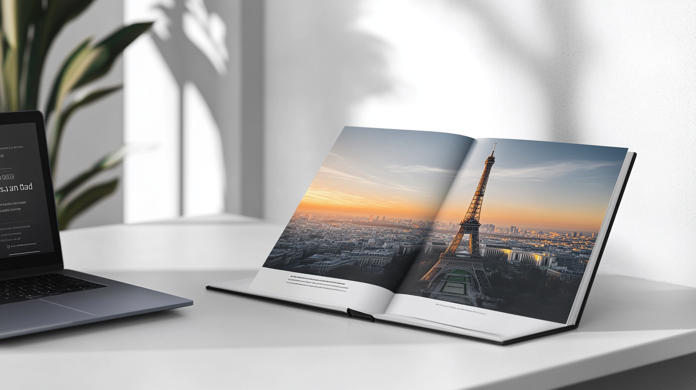
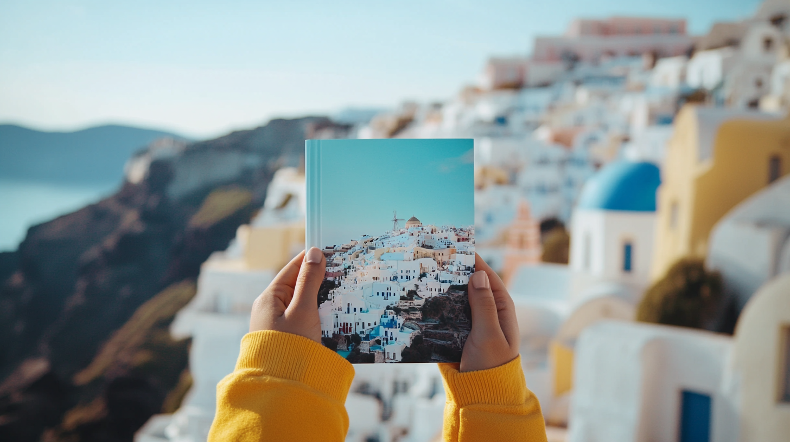

Create personalized photo books and merchandise from your trip photos with AI technology. Get ai-crafted photo books tailored to your travel memories.
In the digital age, Artificial Intelligence is revolutionizing how we preserve travel memories with AI-crafted photo books. This new technology transforms how customers capture, curate, and display their favorite moments. By using AI photobook creation, travelers can now automatically create personalized albums that truly reflect their journeys.
AI-crafted photo books represent a major leap from traditional photo albums and manually created digital books. These AI photo books leverage advanced algorithms to analyze, select, and arrange photos, creating a cohesive and visually stunning story of your travels. With the help of photobook AI, you can automatically craft high-quality keepsakes that capture your favorite moments without any of the manual effort.
At the core of AI photo books lies a combination of cutting-edge technologies, such as computer vision, machine learning, and natural language processing. These elements work together to understand the content, quality, and context of your travel photos. The result is a personalized, professional AI-crafted photo book that reflects the essence of your journey, capturing those moments in a way that feels uniquely yours.
A key feature of AI photobook creation is the system’s ability to recognize and analyze images. The photobook AI is trained on extensive datasets of travel pictures, enabling it to recognize objects, scenery, and even emotions within the images. This means the album AI can instantly categorize your travel photos, recognize overarching themes, and select the most representative and high-quality images for your AI picture book. Whether it’s a photo of your pets or a landscape, the system ensures the final product showcases the best.
Another standout feature of AI-crafted photo books is facial recognition. The AI can identify individuals across multiple pictures, ensuring that every member of your travel group is fairly represented in the final AI picture book. It can detect smiles, laughter, and active engagement, ensuring that the most joyful and memorable moments take center stage. This attention to detail makes your AI photobook a true reflection of your travel adventures, highlighting the moments we love.
The journey from traditional photo albums to AI-crafted photo books is a fascinating one. In the past, creating a photo album was a time-consuming process of printing photos, arranging them manually, and often struggling with adhesives and protective sleeves. The digital age brought about online photo book services, which allowed users to upload and arrange their pictures digitally but still required significant time and design skills.
Now, the heavy lifting of photo selection, arrangement, and even basic editing is handled automatically by intelligent algorithms. This shift dramatically reduces the time and effort required to create a beautiful, professional-looking AI photo book. With the power of photobook AI, users can now effortlessly preserve their favorite moments in high-quality travel keepsakes, making the entire process more streamlined and enjoyable.

The advantages of using AI for creating personalized travel merchandise are numerous and compelling.
One of the most obvious benefits is the significant time savings. What once took hours or even days can now be completed in minutes. AI photobook technology quickly sifts through hundreds or thousands of photos, automatically selecting the best ones and arranging them into aesthetically pleasing layouts.
Choosing which photos to include in a photo book is often the most time-consuming part. AI-crafted photo books excel at this, using various criteria to automatically select the best pictures that showcase your trip’s favorite moments. This automatic process ensures no more manual sorting and decision-making, making it easier to focus on enjoying the results.
AI algorithms are designed to evaluate photos based on their technical quality—such as focus, exposure, and color balance—alongside composition elements like the rule of thirds or symmetry. This ensures that only the highest-quality pictures are included in your AI picture book, even if you’re not a professional photographer, resulting in a polished, professional-looking album AI creation.
AI doesn’t just save time; it improves the quality of the final product in multiple ways, transforming traditional photo books into sophisticated AI-crafted photo books.
Photobook AI can automatically design layouts that are visually engaging and narratively coherent. It groups related photos, creates thematic spreads, and ensures a good balance between close-ups and wide-angle shots, helping to tell the story of your trip effectively.
Based on the content of your pictures, album AI can suggest relevant themes for your photo book. For example, if it detects beach scenes, it may recommend a tropical or nautical theme, creating a cohesive and well-organized AI photo book that reflects your journey.
AI photo books go beyond basic layout by analyzing dominant colors in your pictures. This allows AI to create a harmonious color scheme that enhances the visual flow of your photo book, delivering a polished and professional-looking result.
While AI-crafted photo books are a popular choice, AI is also revolutionizing other types of personalized travel merchandise.
With photobook AI, creating custom calendars featuring your travel photos is easier than ever. These personalized calendars allow you to relive your favorite moments throughout the year, turning your cherished photos into a daily reminder of your adventures.
AI photo books and calendars intelligently match photos to the appropriate season. For instance, snow-covered mountains may be placed in winter months, while sunny beach scenes are showcased during summer. This automatic seasonal placement makes your calendar more relevant and visually appealing.
Advanced album AI systems can also integrate important announcements, events, and holidays into your travel calendars. By merging your pictures with key dates, the AI creates a functional, personalized piece of travel merchandise that celebrates both your travels and the special days that matter most.
Several companies are leading the way in AI-crafted photo books. These services provide easy-to-use platforms that allow travelers to create stunning travel keepsakes with minimal effort.
AI Photobook Creations is a top choice for travelers who want an intuitive platform to simplify the photobook creation process. The system automatically selects and arranges your travel photos, ensuring the final product is both visually appealing and meaningful.
This service offers flexible pricing options to accommodate various customer needs. You can choose from affordable softcover AI photo books or premium hardcover editions, with multiple page count and paper quality options to suit your budget and style.
Travel Memories AI focuses on creating AI-crafted photo books that truly reflect the essence of your travel adventures. By using advanced photobook AI, the system identifies key moments and recurring themes from your journey, ensuring the most meaningful photos are highlighted.
The platform features an intuitive user interface that makes the creation process smooth and enjoyable. From uploading your photos to reviewing the final AI photo book, the guided process is designed for ease of use, even for customers who aren’t familiar with complex technology. This ensures a seamless experience from start to finish, regardless of your tech skills.
Wanderlust AI Creations specializes in designing AI-crafted photo books that narrate the story of your travels. By using advanced AI photobook algorithms, it arranges your photos in a seamless narrative sequence, capturing the essence of your journey in a way that feels cohesive and immersive.
A standout feature of Wanderlust AI Creations is its ability to integrate with popular travel apps. This photobook AI can automatically incorporate data like maps, locations, and your entire travel itinerary into the AI photo book, creating a unique, personalized travel memento that includes not just pictures but also the details of where and how you traveled.

When selecting an AI photo book service, it’s essential to evaluate the features and capabilities each provider offers. Comparing the services helps ensure you choose the right platform for your personalized AI-crafted photo book.
Key factors to consider include the sophistication of the AI algorithms, the variety of products available, customization options, and how well the platform integrates with other apps or travel platforms.
Although AI photo books automate much of the process, top-tier services still allow users to personalize their creations. Customization options may include rearranging pages, adding captions, and choosing from various design themes, ensuring your AI picture book aligns with your preferences and travel style.
As AI continues to evolve, it will introduce even more groundbreaking applied AI in the travel merchandise space. The future of AI-crafted photo books is bright, with advanced features that will take personalization to new heights.
Upcoming advancements include more sophisticated natural language processing to incorporate travel journal entries directly into AI photo books. Additionally, enhanced image correction tools will allow AI photobook creation to fix flawed photos, ensuring every memory is picture-perfect.
The integration of augmented reality (AR) into AI photo books offers a thrilling new possibility. Soon, travelers may point their phones at an image in their AI-crafted photo book and see videos or 3D models of the locations come to life, merging travel memories with immersive technology.
While AI photo books automate much of the process, you can take a few steps to ensure your travel memories are captured in the best way possible.
Though photobook AI can automatically choose the best images, starting with a varied selection enhances the final product. Include wide shots, close-ups, and candid moments to give the AI picture book more context and diversity to work with.
Organize your photos into folders by location or date before uploading them. This helps the AI-crafted photo book software understand the timeline of your trip and creates a more cohesive story in the final layout.
Use metadata and tagging features in your photo management tool. Adding location details, dates, and descriptions helps album AI make more accurate selections and creates personalized captions for your AI photobook.
AI-crafted photo books and travel merchandise represent an innovative blend of cutting-edge technology and personal storytelling. These tools offer a fast, efficient way to preserve your favorite travel moments, ensuring high-quality memories that last. As AI continues to advance, even more personalized and creative ways to capture your journeys are on the horizon.
Whether you’re a seasoned traveler or want to commemorate a special trip, AI-powered photo books offer a professional-quality solution to keep your memories vivid. Harness the capabilities of AI photobook creation to craft beautiful keepsakes that let you focus on what matters most—making memories during your travels.